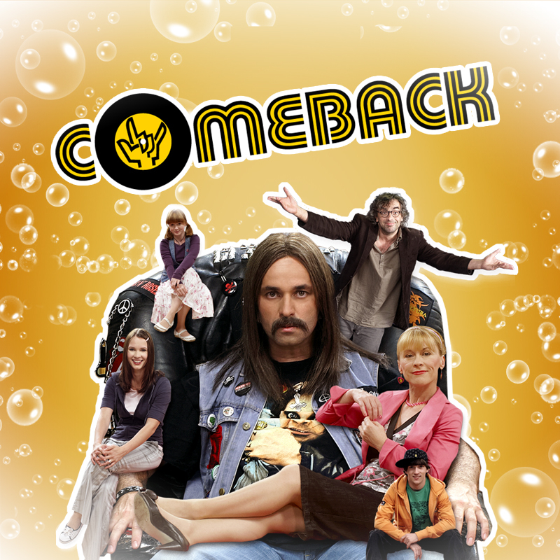

O seriálu

Comeback je český televizní sitcom z produkce televize Nova. První díl s názvem „Křeslo“ byl premiérově vysílán 4. září 2008, poslední díl byl uveden 24. října 2011. Na každém dílu pracoval scenáristický tým, jehož členy byli jak profesionální scenáristé, tak bloggeři a další nadšenci. Tým vedl Tomáš Baldýnský. V divácké anketě ANNO 2008 o nejoblíbenější pořad TV Nova získal Comeback třetí místo a představitel Ozzáka Martin Dejdar byl zvolen „Mužem roku“. V roce 2009 Comeback své umístění zopakoval, Martin Dejdar se umístil na třetím místě.